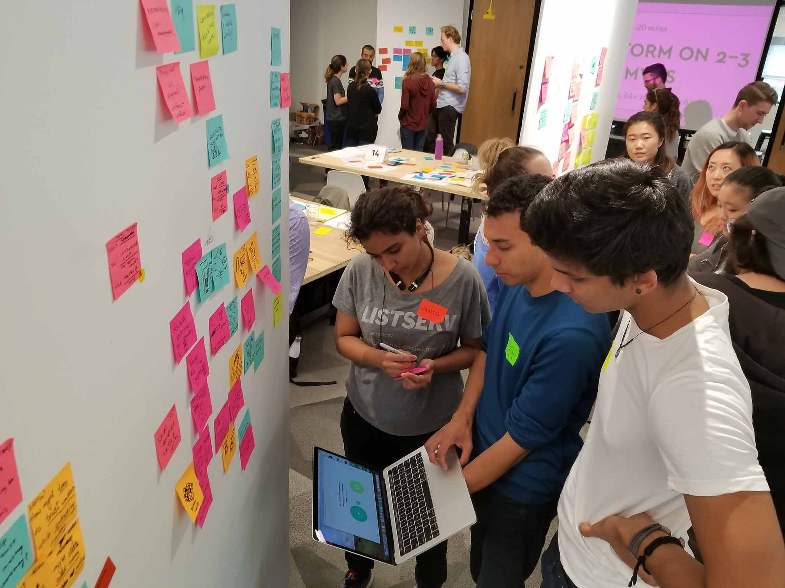

IDEO Colab is IDEO's platform for designing futuristic technologies. I attended their one-day makeathon, in which I created a design concept of a cryptocurrency wallet (wristband) for a child in a future world.
As the youngest attendee selected from 700 applicants, I found it difficult to keep up with the pace of the rapid design sprint and articulate ideas to my highly talented team of four people. I learned and grew tremendously in the face of these challenges.
I learned how to practice empathy in the design process, collaborate with a diverse team, and prototype rapidly— and most importantly, to have faith and confidence in my own ideas. I am grateful to IDEO for giving me the opportunity to learn these skills early in my life, and work alongside industry professionals including professional designers, Harvard MBA students, and software engineers.
I was mainly involved in the research and concept development. Two of my teammates led presentation and prototype design.
The cryptocurrency wristband we conceptualized would help kids using cryptocurrency for the first few times to realize that the abstract concept of cryptocurrency represented real-world purchasing power, and should be used wisely. The gif above does a wonderful job showing our prototype (mocked up by my teammate Jenny Liu). Parents would transfer money from their personal cryptocurrency wallet to their kid's wristband. The wristband would have a blank white screen, which when tapped, would show a range of colors that indicated the child's spending on categories like food, entertainment, etc. This was a social feature that we added to incorporate an element of fun, and also teach the basics of budgeting. Only the child's fingerprint could unlock the specific balance left on the wallet ($50.81), which when tapped would reveal a QR code that could be used at shops and vending machines to make purchases. When the transaction was completed, the wristband would vibrate to signify to the child that something had actually happened (purchasing power had decreased), even though nothing in the physical world seemed to have changed.
